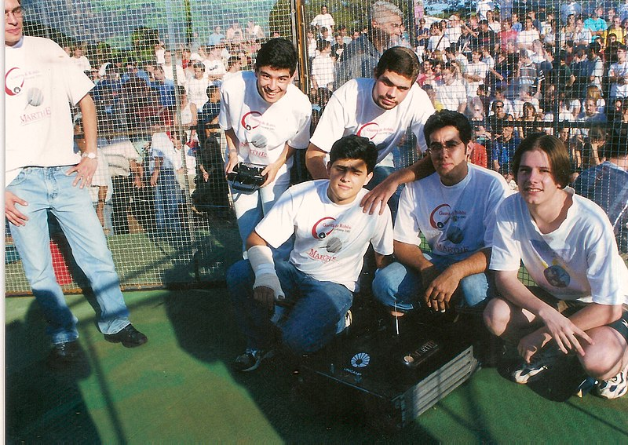

Historia da Equipe
2000
A Equipe Phoenix nasceu no ano 2000 com nome de Equipe Marthe, sendo uma das equipes de robótica mais antigas da América Latina. A Equipe Marthe inicialmente surgiu com o intuito de desenvolver um time de futebol robótico na Faculdade de Engenharia Mecânica da Unicamp.

Apenas no início de 2001, a equipe decidiu voltar-se para robôs rádio controlados, que apresentavam algoritmos mais fáceis do que os robôs envolvidos no futebol. Com essa decisão em mente e junto com as equipes de robótica da Escola Politécnica da USP, da Escola Federal de Engenharia de Itajubá (EFEI) e do Instituto Tecnológico da Aeronáutica (ITA), foi organizado pela Equipe Marthe a primeira competição de robótica da América Latina, tal evento foi realizado na Unicamp e era chamado de Desafio de Robôs.
Essa competição era inspirada nos eventos parecidos realizados nos países da Europa, nos EUA e em outros países, e levou os alunos de graduação a testarem seus conhecimentos teóricos de engenharia adquiridos durante o curso e utilizarem sua criatividade na hora de construírem os robôs e suas armas de imobilização. A equipe terminou em terceiro lugar na competição, sendo desclassificada no segundo round por não retornar devido o robô ter pego fogo no intervalo dos rounds por conta de um curto-circuito ocasionado pelo travamento do motor.
2001
2005
Após o Desafio de Robôs se tornar mais popular, o número de membros da equipe aumentou e continuou suas atividades até o ano de 2005, quando passou por diversas mudanças e recebeu o nome Equipe Phoenix de Desafio de Robôs.